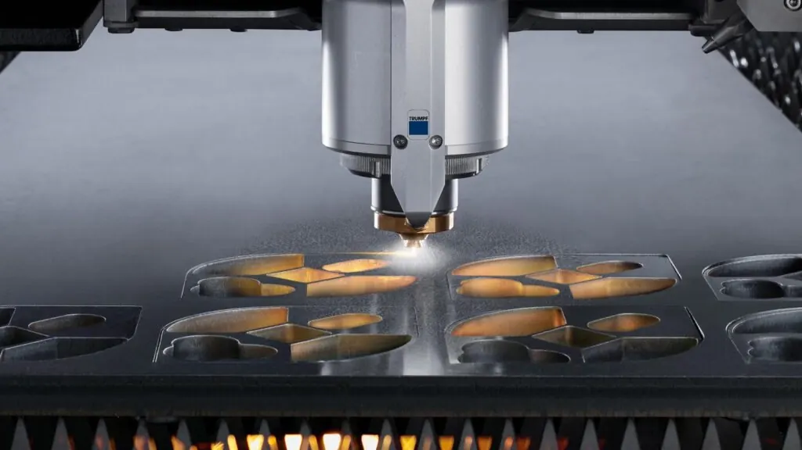
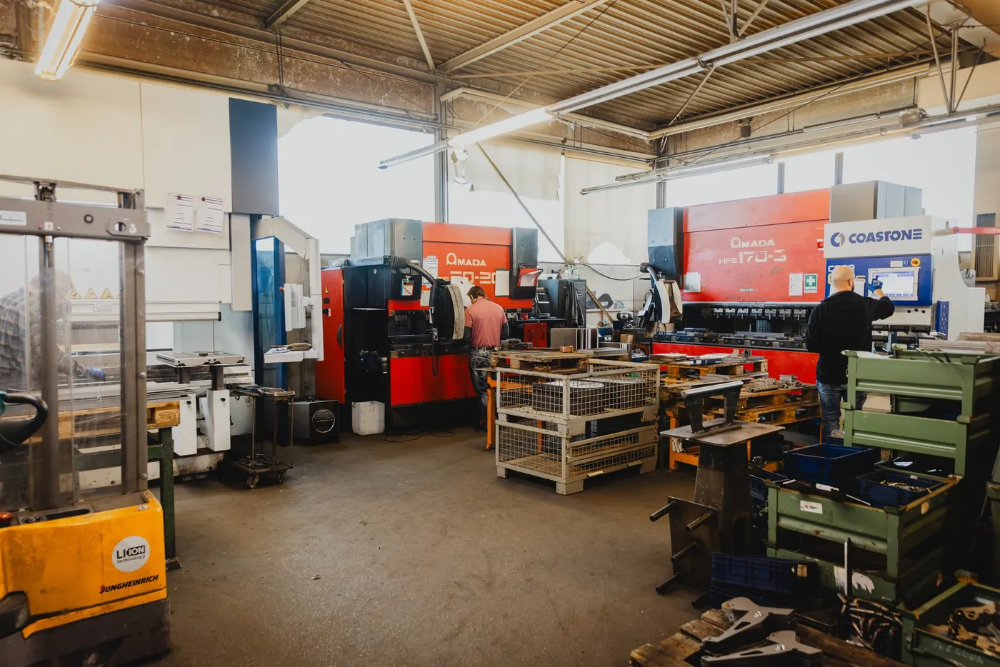
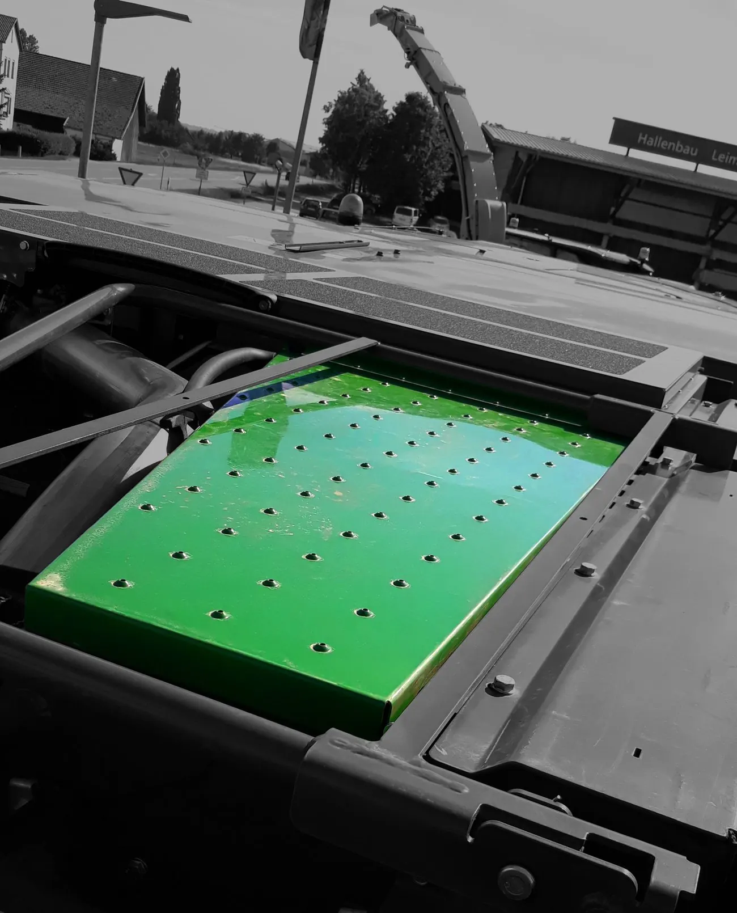
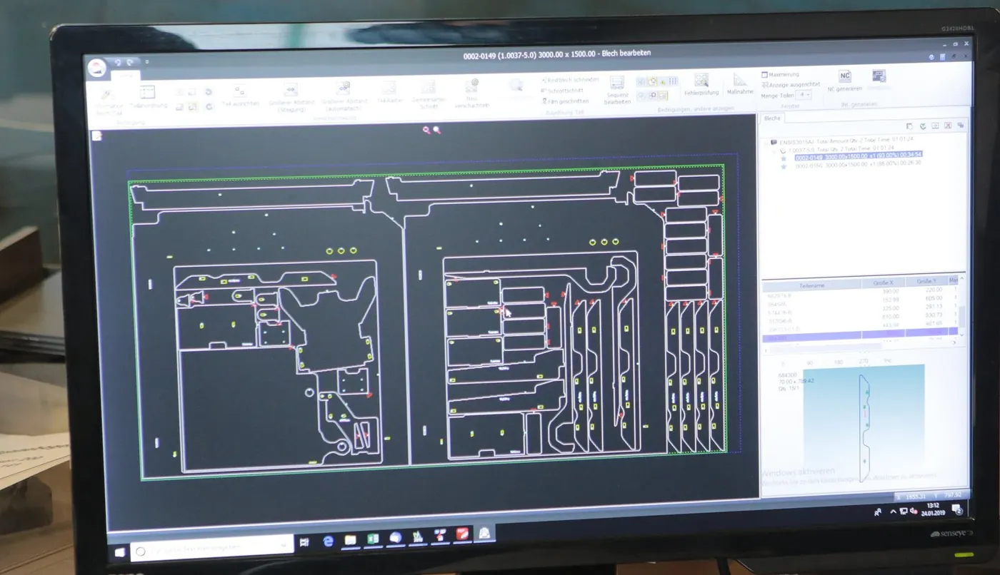
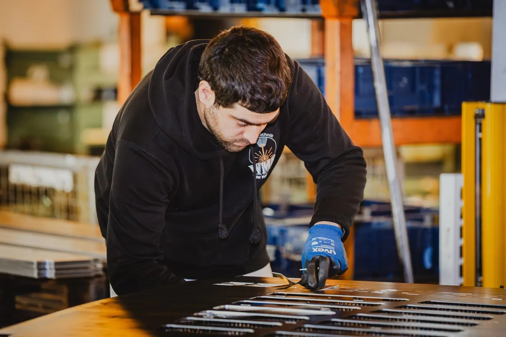

Wiederkehrende Bilder
Lochbilder, Ausschnitte und Konturen, die in jeder Serie gleich sind.
Wo dasselbe Bild hundertmal gebraucht wird, ist Stanzen schneller als Schneiden — und für den Kunden am Ende günstiger.
Stanzen und Laserschneiden schließen sich nicht aus — sie ergänzen sich. Wir entscheiden je Teil, welcher Weg schneller und günstiger ist, und sagen Ihnen das vor der Kalkulation, nicht danach.

Ein Hub, ein Bild. Wo dasselbe Lochbild hundertmal gebraucht wird, ist das der kürzere Weg — und der günstigere.
Löcher

Für Lochbilder in Serie ist Stanzen der kürzere Weg. Die Sonderkontur schneidet danach der Laser.
Lochbilder, Ausschnitte und Konturen, die in jeder Serie gleich sind.
Ab einer bestimmten Stückzahl ist Stanzen der kürzere Weg.
Stanzen für das Grundbild, Laser für die Sonderkontur.
Gleichmäßige Raster, wie sie an Tritten und Verkleidungen gebraucht werden.
Gestanzte Teile gehen direkt in die Abkantpresse.
Wir sagen Ihnen, ab wann sich der Wechsel rechnet.



Was Einkäufer und Konstrukteure uns zu Stanzen am häufigsten fragen — beantwortet von den Leuten, die die Maschine fahren.
Ihre Frage steht nicht dabei?
Anrufen: 08772 803707Bei wiederkehrenden, einfachen Bildern in Serie. Bei komplexen Konturen und kleinen Stückzahlen gewinnt der Laser.
Nicht immer. Was mit vorhandenen Werkzeugen geht, klären wir vorab — das entscheidet oft über den Preis.
Ja, und das machen wir häufig: das Grundbild gestanzt, die Sonderkontur gelasert.
Ja. Welcher Weg sinnvoll ist, hängt aber stärker von der Dicke ab als beim normalen Stahl.
Ab einer bestimmten Stückzahl ist Stanzen der kürzere Weg. Mit der Zeichnung sagen wir Ihnen, ab wann.
Oder direkt anrufen: 08772 803707